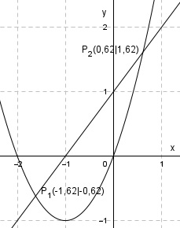

Aufgabe 31 In welchen Punkten schneiden sich die Parabel y = x2 + 2x und die Gerade y = x + 1? Rechnerische Lösung: Gleichsetzen: x2 + 2x = x + 1 |-x x2 + x = 1 | -1 x2 + x - 1 = 0 p, q – Formel: p = 1 ; q = -1 x1,2 = x1,2 = -0,5 ± x1,2 = -0,5 ± x1,2 = -0,5 ± 1,12 x1 = -0,5 - 1,12 = -1,62 y1 = -1,62 + 1 = -0,62 x2 = -0,5 + 1,12 = 0,62 y2 = 0,62 + 1 = 1,62 P1(-1,62|-0,62) ; P2(0,62|1,62)
